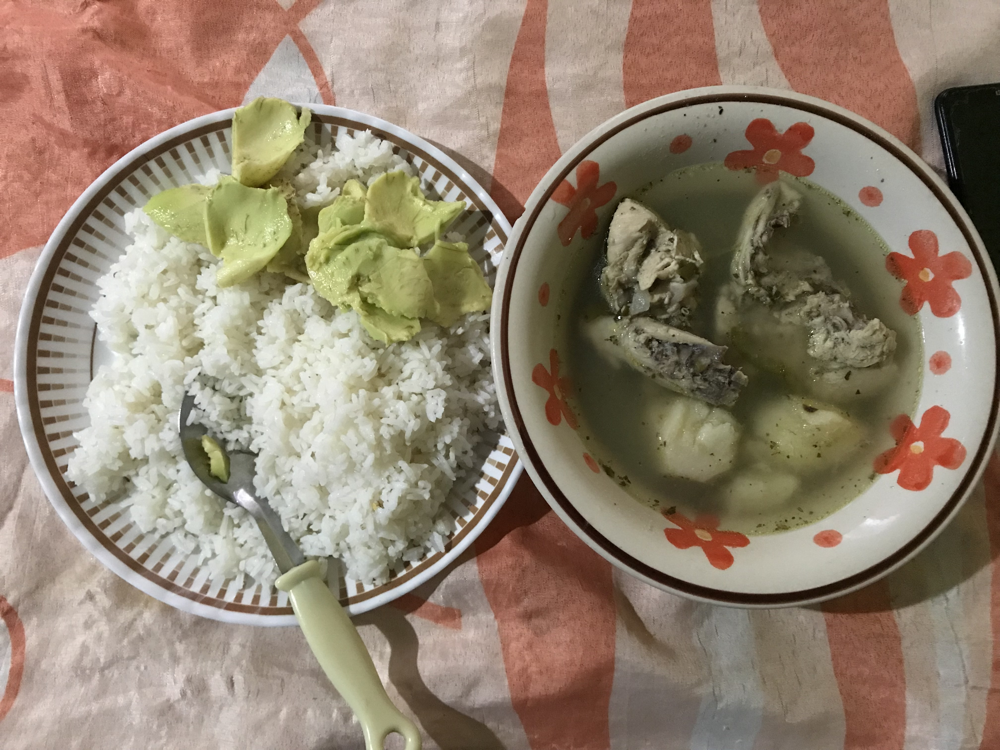
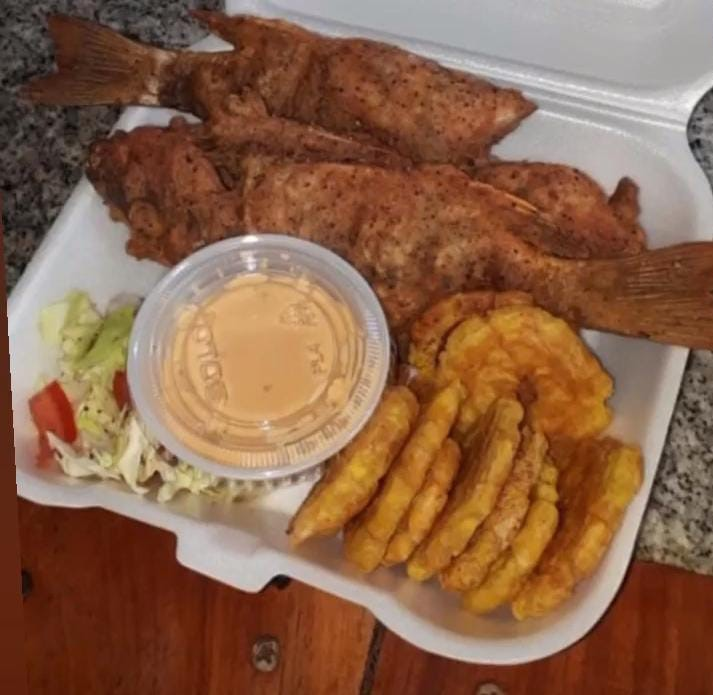

Gastronomía, el resultado de diversas culturas
 Comida corriente en Panamá
Comida corriente en Panamá
Panamá en su historia resalta que ha sido un país multicultural, desde la época colonial, cuando llegaron personas de distintos países, de los cuales compartieron conocimientos, artículos y hasta comidas que hoy día prevalecen en nuestra región.
Fueron africanos, españoles, asiáticos, estadounidenses y otros países que se establecieron a lo largo del país, plantando nuevas culturas y costumbres, así como platos de comidas, tradicionales de sus regiones y que, junto a los panameños, crearon una mezcla de sabores.
Dentro de la dieta de los panameños y quizá de muchos países latinoamericanos, se ha establecido a el arroz, como ese plato fuerte y que no puede faltar día a día en la mesa de los hogares, restaurantes o las tradiciones fondas.
Pero ¿se sabe la procedencia del arroz?, son muchos los relatos que han surgido respecto a la llegada de este grano a nuestro país y sobre todo a Latinoamérica, entre ellas está la teoría, que fueron los chinos los que trajeron el arroz a Panamá, otros cuentan que fueron los africanos, quienes pusieron en práctica los métodos de cultivos, aunque en realidad no se está claro de dónde provino, lo que si se sabe es que es el plato principal de la mayoría de las personas.
Comidas panameñas
Plato de sancocho con arroz.
Una de las comidas tradicionales es el Sancocho o sopa de pollo, que es un plato muy degustado por toda la población y sobre todo su principal acompañante para disfrutarlo, un arroz blanco.
Este plato es degustado en todas las provincias del país, aunque tiene diferentes preparaciones, el sancocho tradicional solo llevará la siguente cocción
Ingredientes
- Pollo (la cantidad que usted deseé)
- Culantro o cilantro
- Ajo (molido o entero)
- Ají
- Orégano
- Ñame
- Sazonador
- Pimienta
- Sal
Arroz con pollo
Otro de los platos que también es degustado y preparado a nivel nacional es el arroz con pollo, esta comida es muy tradicional para las celebraciones de cumpleaños, o fechas especiales y va acompañado con una ensalada de papas y huevos, o la ensalada de ‘fiestas’, que es una ensalada roja, porque adicional a las papas le colocan remolachas, dándole ese color rojizo, que es un toque diferente a la ensalada.Ingredientes:
- Arroz
- Pechugas de pollo
- Caldo de Pollo
- Achiote
- Ají
- Ajo
- Culantro o cilantro
- Cebolla
- Zanahoria
- Vegetales mixtos
- Salsa china
- Aceitunas (opcional)
Preparación:
Lo primero que se debe hacer es poner a hervir las pechugas, con ajo, caldo de pollo y sal al gusto-hasta que estén bien cocidas-.
Mientras el pollo se está cocinando, proceder a picar las legumbres y colocarlas en recipientes por separados
Una vez el pollo esté listo, se procede a desmenuzar, para posteriormente en una paila se calienta el aceite y después allí se sofríen las zanahorias y una vez estén doradas, se vierte el arroz para sofreírlo.
Después de unos minutos, se le colocan los demás vegetales, el caldo de pollo-que sean varios sobres para darle color-, de igual manera la salsa china, de allí se le coloca el pollo.
Luego que está todo listo, se procede a colocarle agua-en una cantidad considerable-, sal al gusto.
Cuando ya haya secado el arroz, se le procede a colocar las aceitunas y se cocina por unos 15 minutos más y está listo para servir.
 Pescado con patacones
Panamá es muy reconocido por tener costas en ambos mares, por lo que hace que llegues cientos de visitantes a disfrutar de sus playas, pero también son propicias para degustar de ricos platos de comidas, sobre todo el marisco fresco.
Uno de los platos más buscados por los que llegan a las costas es el pescado frito con patacones, en este sentido los patacones serían plátanos aplastados y posteriormente se fríen, pero son el complemente perfecto para acompañar el pescado.
Ingredientes:
- Pescado (Limpio y de cualquiera clase-el pargo es el mejor-)
- Plátano
- Ajo
- Curry o caldo de pollo
- Pimienta
- Sal
- harina
Preparación:
Se sazona el pescado con la sal; el curry o caldo de pollo; ajo, pimienta y sal al gusto.
Se deja reposar por varios minutos, mientras se va sazonando.
Mientras el pescado coge sabor, se le quita la cáscara al plátano y se parten en rodajas, posteriormente se coloca una sartén en la estufa con bastante aceite para freír los plátanos cortados.
Luego de haberlos dejado unos minutos, se sacan y se aplastan, con un aplastador o si no tiene, con la parte de debajo de una taza o plato; una vez estén listos se le coloca sal y se vuelven a freír.
Al mismo tiempo que se están friendo los plátanos, en otra sartén se coloca el pescado, el cual es pasado primero por harina y posteriormente colocado a que se empiece a cocer.
Luego de estar listos se arregla en un plato y finalmente quedó el pescado frito con patacones.
Este plato se puede acompañar con ensalada de lechuga con tomate (opcional); un limón para tirarle al pescado y kétchup para los patacones.
Comidad internacionaes
Panamá, por ser considerado “Corazón del mundo, fuente del universo”, mantiene una serie de cultura y junto con ello la gastronomía variada, platos de diferentes países./
Margarita Verga, cocinera de un restaurante en el interior del país, mencionó que ellos han tenido que aprender hacer diferentes tipos de comidas para todos los clientes que buscan variedad. Por ejemplo, ofrecen tortillas fritas y asadas, bistec de carne, pollo frito; mientras que para el almuerzo algún tipo de menestra, arroz blanco-que no puede faltar- ensalada, o tajadas, así como pollo guisado, fritos, carnes, y otros tipos de platos.
Vega destacó que, para la cena, las hacen por pedidos y muchas personas prefieren pedir el arroz frito, o el chow mein, que es una comida china, pero que en todas partes mantiene una demanda considerable, porque a las personas les gusta variar a lo tradicional.
Hizo mención que en la ciudad capital hay restaurantes exclusivos que venden comidas propias de cada país, como: la italiana, la brasileña, la mexicana, colombiana o venezolana, que son los que mayor presencia tienen y también son degustadas.
Reiteró que este crisol de razas ha sido de gran importancia para el país porque los turistas al llegar tienen una gran variedad de paltos a degustar, tanto nacionales como extranjeros.